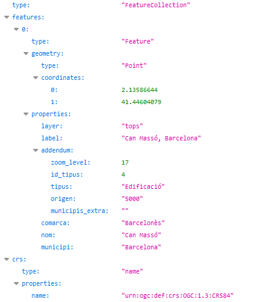

Cerca autocompletar
URL de connexió: https://eines.icgc.cat/geocodificador/autocompletar (GET)
Descripció
L'operació autocompletar obté les dades i la ubicació d’una adreça o topònim sense necessitat de completar totes les dades d’identificació: a mesura que es va introduint el text a la caixa de cerca, s’envien peticions a autocompletar, amb la finalitat de trobar respostes de forma ràpida.
És imprescindible indicar el text a cercar en el paràmetre text.
El resultat s'obté en format GeoJSON.
En la integració en altres aplicacions, es recomana combinar autocompletar i cerca:
- a mesura que l'usuari va teclejant el text a cercar, enviar peticions a autocompletar , amb la finalitat de trobar respostes de forma ràpida.
- un cop s'ha completat el text, si les respostes proporcionades per autocompletar no són suficients, es pot prèmer la tecla [Intro] i fer una petició a l'operació de cerca completa.
Donat que les peticions a autocompletar generalment responen directament a l'entrada de text per part de l'usuari, cal tenir en compte la velocitat d'escriptura amb l'objectiu de no colapsar les peticions.
També és necessari tenir en compte que les respostes poden ser asíncrones i no ser respostes en el mateix ordre en que es varen enviar.
Per a cercar les coordenades corresponents al topònim can masso,barcelona cal fer la petició https://eines.icgc.cat/geocodificador/autocompletar?text=can%20masso,barcelona&layers=tops&size=1, que té la resposta: 
Construcció de la consulta
La petició a l'API es construeix a partir de la URL https://eines.icgc.cat/geocodificador/autocompletar, seguida del signe ? i de la seqüència de paràmetres, separats pel signe &.
Els paràmetres són els següents:
-
text: conté el text a cercar. És un paràmetre obligatori.
És important tenir en compte que cal separar el nom del municipi amb una coma, de la manera següent:
-
nom_de_carrer portal, municipi
-
nom_edificació_aïllada, municipi
-
nom_topònim, municipi
Exemples:
-
-
layers: s'utilitza per filtrar els tipus d'element a cercar
Es poden diferenciar els tipus de dades a cercar indicant el paràmetre layers, amb els valors següents:
. address: adreces postals
. tops: tots els topònims
. topo_tipus_id: topònims del tipus id, on id és una cadena amb nombres entre 1 i 22, amb el 0 a l'esquerra pels menors de 10. Per exemple: topo_tipus_01 per cercar Caps de municipi. La taula amb els tipus de topònim i els seus identificadors es pot consultar a Taula topònims
Es poden indicar els valors següents per segregar els topònims en dos grups:
. topo1: topònims referents a agrupacions de població (municipis, caps de municipi, entitats de població, disseminats i barris)
. topo2: resta de topònims.
Exemple, per trobar topònims amb el nom Riera de Gaià: https://eines.icgc.cat/geocodificador/autocompletar?text=riera%20de%20gaia&layers=topo1,topo2
-
size: s'utilitza per a definir el nombre màxim de resultats
Per defecte, es retornen fins a 10 resultats de cada un dels tipus indicats a layers. Es pot indicar un nombre diferent amb el paràmetre size. El valor màxim és 40.
Per exemple, per a trobar un únic topònim: https://eines.icgc.cat/geocodificador/autocompletar?text=riera%20de%20gaia&layers=topo1&size=1
-
boundary.rect.min_lon, boundary.rect.min_lat, boundary.rect.max_lon i boundary.rect.max_lat: per cercar en una àrea rectangular
Es pot limitar espaialment la cerca indicant les coordenades latitud i longitud d'un rectangle amb aquests paràmetres.
-
boundary.circle.lon, boundary.circle.lat, boundary.circle.radius: per cercar en una àrea circular
Es pot limitar espaialment la cerca indicant les coordenades d'un cercle amb els paràmetres boundary.circle.lon i boundary.circle.lat (coordenada central de referència) i el paràmetre boundary.circle.radius (radi en km).
-
focus.point.lat, focus.point.lon: priorització de resultats per proximitat
Per prioritzar els resultats més propers a unes coordenades cal indicar-les amb aquests paràmetres.
-
com: per filtrar per comarca
El paràmetre com permet especificar el nom de la comarca o el seu identificador.
Es pot consultar el llistat de comarques a Taula de comarques
Exemples:
https://eines.icgc.cat/geocodificador/autocompletar?text=biblioteca&com=girones (indicant el nom de comarca)
https://eines.icgc.cat/geocodificador/autocompletar?text=biblioteca&com=20 (indicant identificador de comarca)
-
mun: per filtrar per municipi
El paràmetre mun permet especificar el nom del municipi o el seu identificador.
Es pot consultar el llistat de municipis a Taula de municipis
Exemples:
https://eines.icgc.cat/geocodificador/autocompletar?text=biblioteca&mun=girona (indicant el nom de municipi)
https://eines.icgc.cat/geocodificador/autocompletar?text=biblioteca&mun=170792 (indicant identificador de municipi)
Paràmetres d'entrada
| Paràmetre | Tipus | Obligatori | Descripció | Valor per defecte | Exemple |
|---|---|---|---|---|---|
| text | cadena de text | Si | Text a cercar | Riera de Sallent | |
| focus.point.lat | número de punt flotant | No | Latitud del punt pel que es volen prioritzar els resultats | 41.430371882652814 | |
| focus.point.lon | número de punt flotant | No | Longitud del punt pel que es volen prioritzar els resultats | 1.8566894531250002 | |
| layers | cadena de text | No | Tipus d’elements a cercar: [address, tops, topo_tipus_id, topo1, topo2] | topo1,topo2,address | address,topo1 |
| size | enter | No | Nombre de resultats. El màxim és 40 | 10 | 5 |
| com | cadena de text | No | Identificador d'una comarca, dins la que es vol restringir la cerca | 01 | |
| mun | cadena de text | No | Identificador d'un municipi, dins la que es vol restringir la cerca | 080018 | |
| boundary.circle.lat | número de punt flotant | No | Latitud del punt del cercle de cerca | 41.430371882652814 | |
| boundary.circle.lon | número de punt flotant | No | Longitud del punt del cercle de cerca | 2.81233 | |
| boundary.circle.radius | número de punt flotant | No | radi del cercle de cerca (km) | 10 | |
| boundary.rect.min_lat | número de punt flotant | No | Latitud de l'extrem inferior del rectangle de cerca | 41.909303728668824 | |
| boundary.rect.min_lon | número de punt flotant | No | Longitud de l'extrem inferior del rectangle de cerca | 2.694053649902344 | |
| boundary.rect.max_lat | número de punt flotant | No | Latitud de l'extrem superior del rectangle de cerca | 42.01142264969458 | |
| boundary.rect.max_lon | número de punt flotant | No | Longitud de l'extrem superior del rectangle de cerca | 2.911033630371094 |
Paràmetres de sortida
Es retornen els resultats en format GeoJSON.
L'element features.properties té els camps descrits a la taula següent:
| Camp | Descripció | Aplicacble als elements |
|---|---|---|
| layer | Tipus d'element trobat.Els valors possibles són els indicats al paràmetre layers d'entrada | Tots |
| etiqueta | Agregació de camps. Per adreces: carrer portal, municipi (llogaret). Nota: Si el llogaret coincideix amb el municipi, no s'indica. Per topònims: topònim, municipi | Tots |
| municipi | Municipi. En alguns topònims , no hi ha un municipi assignat i pren el valor "-" | Tots |
| comarca | Comarca. En alguns topònims , no hi ha una comarca assignada i pren el valor "-" | Adreces |
| llogaret | Llogaret | Adreces |
| portal | Portal de l'adreça | Adreces |
| nom | Nom del carrer, de l'edificació aïllada o de topònim | Tots |
| codi_postal | Codi postal | Adreces |
| distancia | Distància en quilòmetres al punt indicat amb els camps focus.point.lat, focus.point.lon | Tots |
| addendum.origen | Escala origen | Topònims |
| addendum.zoom | Nivell de zoom òptim | Topònims |
| addendum.tipus | Tipus de topònim | Topònims |
| addendum.id_tipus | Identificador tipus de topònim | Topònims |
| addendum.municipis_extra | Resta de municipis assignats | Topònims |
| addendum.bbox | Coordenades geogràfiques del rectangle contenidor del carrer | Adreces |
| addendum.bbox_utm | Coordenades UTM del rectangle contenidor del carrer | Adreces |
Exemples de sortida segons tipus de layer
| Adreça postal |
|---|
| https://eines.icgc.cat/geocodificador/autocompletar?text=nou%2010%20girona&layers=address&size=1 |
 |
| Topònim |
|---|
| https://eines.icgc.cat/geocodificador/autocompletar?text=Barranc%20de%20Barball&layers=tops&size=1 |
 |